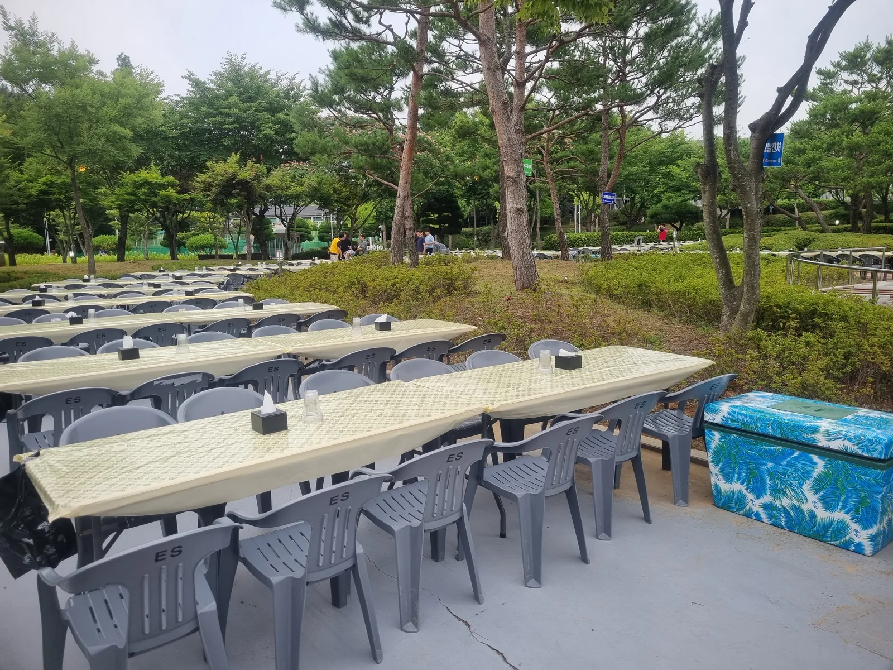
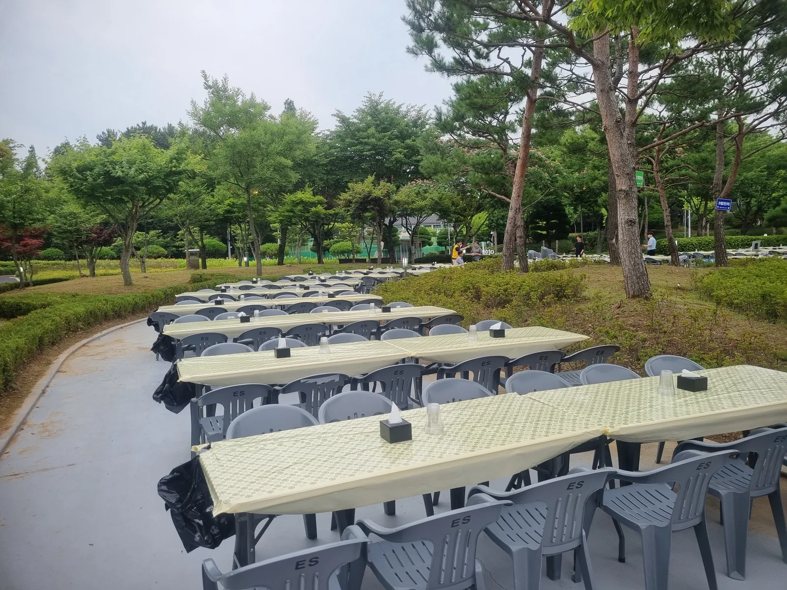
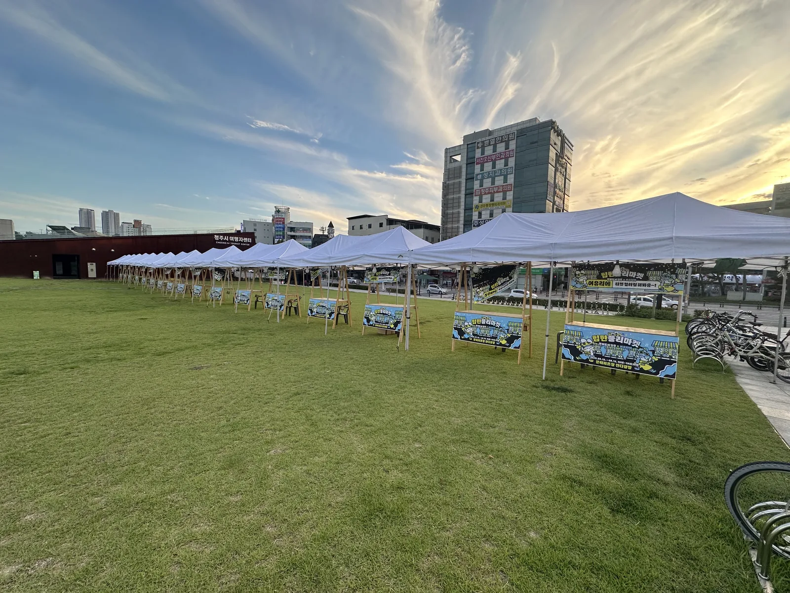

진천 · 음성 산업단지 기업들이 임직원 행사를 공원에서 여는 경우가 늘었습니다. 공원 행사는 회사 강당과 달리 그늘 · 물 · 전기 세 가지를 저희가 만들어야 합니다. 진천 공원 기업행사 현장을 기준으로 구성 순서를 적습니다.

테이블은 통로를 먼저 그리고 놓습니다
테이블부터 놓고 통로를 만들면 꼭 막히는 곳이 생깁니다. 먼저 무대 → 급수 → 화장실을 잇는 주 통로(폭 3m)를 그리고, 테이블은 통로 양쪽에 8명 단위로 놓습니다. 접이식 테이블 1개(1800mm)에 의자 6~8개가 기본입니다.
- 임직원 200명 → 테이블 28~30개, 의자 220개
- 내빈석은 앞줄 2~3개 테이블에 테이블보 + 의자 커버
- 테이블 다리 밑 받침으로 잔디 보호

급수 · 음료 공간은 그늘에, 무대에서 멀리
사람이 가장 많이 몰리는 곳이 급수대입니다. 무대 바로 옆에 두면 공연 중에 줄이 무대를 가립니다. 나무 그늘 아래 천막 1~2동에 아이스박스와 테이블을 놓고, 쓰레기 분리함을 바로 옆에 둡니다.

무대 · 음향은 해 방향을 봅니다
오후 행사는 무대가 서쪽을 등지게 세워야 관객이 해를 안 봅니다. 스피커는 무대 좌우에 두고, 테이블 구역이 길면 중간에 보조 스피커를 하나 더 둡니다. 전기는 공원 관리사무소 분전반을 쓰거나 발전기를 가져갑니다.
저녁까지 이어지면
천막마다 조명 하나, 통로에 스트링 라이트를 걸면 저녁 사진이 살아납니다. 진천 현장은 오후 3시 시작 · 저녁 8시 마감으로, 설치 4시간 · 철거 1시간 30분이 걸렸습니다.
자주 묻는 질문
Q공원 사용 허가는 누가 받나요?
공원 사용 허가는 주최 측에서 받으셔야 합니다. 허가 조건(팩 사용 · 전기 · 차량 진입)을 알려 주시면 그에 맞춰 장비를 준비합니다.
Q진천 · 음성 산업단지 내 행사도 가능한가요?
네. 공장 마당 · 주차장 행사도 많이 합니다. 아스팔트 바닥은 웨이트 고정으로 진행합니다.
Q테이블보 · 의자 커버도 같이 빌릴 수 있나요?
네. 내빈석만 씌우거나 전체를 씌우거나 선택할 수 있습니다.